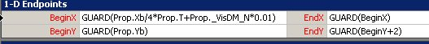
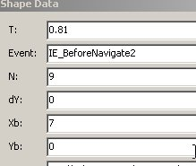
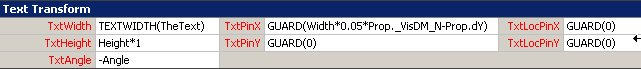
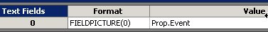

Картинка на заставке иллюстрирует способ автоматического создания довольно специфичной диаграммы. Диаграмма создается буквально одним движением мыши путем перетаскивания нескольких строк из окна внешних данных на страницу рисунка.
Интересно то, что макросы здесь не используются. Существует только один специальный шейп, который все делает. Посмотрим, как это сделано.
Отступление
Исторически эта задача возникла из программной области. В процессе работы с объектом WebBrowser появляются цепочки перекрывающихся во времени запросов-ответов, порождающих множество событий. И возникает необходимость разобраться с их взаимовлиянием и последовательностью появления.
Зафиксировать время возникновения событий довольно легко. Сохранить протокол в текстовом файле или в Excel тоже несложно. В итоге имеем файл, в котором есть множество записей и в каждой из них: номер события, время возникновения и название. Теперь нужно быстро получить наглядную диаграмму.
Конструкция
Если рассчитывать на использование в Visio Professional, то задача хорошо решается с помощью окна внешних данных. Нужно подготовить мастер-шейп, управляемый данными, и открыть источник данных в окне внещних данных. После этого "перетаскивание" строки данных на страницу рисунка приведет к появлению копии селектированного мастер-шейпа, а переданные данные заставят его переместиться в нужное место. А так как перетащить можно сразу несколько строк, то одним этим движением мы сразу построим всю диаграмму.
Собственно, для минимальной реализации достаточно было бы двух формул в секции 1D Endpoints: BeginX=Prop.T и EndX=BeginX
При этом шейп смещался бы по оси X пропорционально значению свойства T (время наступления события).
Остальные добавки обеспечивают дополнительные возможности для управления диаграммой.

Функция GUARD() защищает формулы от непреднамеренного искажения в результате действий оператора. Элементы диаграммы нельзя будет подвинуть вручную.

Prop._VisDM_N вносит дополнительный искусственный сдвиг. Так как некоторые события возникают почти одновременно, то и на графике они сливались бы, перекрывали друг друга. Во избежание этого вносится искусственное искажение. Строки нумеруются (параметр N) и каждое очередное значение смещается на 0.01 дюйма, что делает их раздичимыми даже при одинаковом времени.
Параметр Xb (Prop.Xb) позволяет управлять масштабом по горизонтали. Действие основано на способности окна Shape Data изменять данные сразу нескольких шейпов. То есть, если селектировать всю диаграмму и изменить значение Xb в окне Shape Data, то новое значение будет передано во все селектированные шейпы и значение BeginX будет пересчитано для всех шейпов. Строка Xb отсутствует в файле данных. Этот параметр введен специально для управления масштабом отображения.
Схожим образом действуют параметры Yb и dY. Yb участвует в формуле BeginY и косвенно в EndY, что позволяет сместить селектированные шейпы диаграммы по вертикали.
dY смещает текст.


В виде текста отображается название события. Как правило, названия длинные и перекрывали бы друг друга. Поэтому каждое очередное название смещается вверх пропорционально номеру события. Но при большом количестве измерений это смещение может стать слишком большим. Вот в этом случае и подключается dY. Можно селектировать часть шейпов диаграммы и изменить для них значение dY. При этом тексты селектированной части будут смещены на заданную величину.
Обращение с полученной диаграммой
Размещение шейпов с помощью формул, да еще и защищенных функцией GUARD, хорошо работает при построении одиночной диаграммы, но фиксированная привязка затрудняет создание более сложных документов. Частично помогают описанные выше возможности сдвига и масштабирования через окно внешних данных. Если их не хватает, то можно порекомендовать следующие способы:
1. Группировка. Если полученное изображение сгруппировать, то координаты будут привязаны уже не к листу, а к группе. Группа в целом легко транспортируется в нужное место.
2. Построенное изображение может быть сохранено в формате рисунка (.gif, .jpeg, .emf...). В таком виде оно легко транспортируется и может быть вставлено в любой другой документ. Причем не обязательно сохранять рисунок в файле - достаточно после команды Copy использовать Paste Special и выбрать формат рисунка.
3. Можно также после построения трансформировать формулы шейпов макросом, заменяя жесткую связь с данными на значения. Пример макроса ниже:
Sub defreeze()
For Each sh In ActiveWindow.Selection
sh.Cells("BeginX").FormulaForce = sh.Cells("BeginX").ResultIU
sh.Cells("BeginY").FormulaForce = sh.Cells("BeginY").ResultIU
sh.Cells("EndX").FormulaForce = sh.Cells("EndX").ResultIU
sh.Cells("EndY").FormulaForce = sh.Cells("EndY").ResultIU
Next
End Sub
Последний способ дает наибольшую свободу, но в документе появляется макрос, а этого некоторые пользователи стараются избегать.
Условия применения
Способ построения диаграммы путем перетаскивания данных на страницу рисунка рассчитан на применение в Visio Professional. И причина только одна - Visio Standard не имеет окна внешних данных, то есть не позволяет выполнить такой изящный взмах мышкой. Все остальное можно выполнить и в версии Standard. Но для переброски данных из источника в шейпы вполне можно использовать макрос и тогда ограничение на версии снимается.
В каких-то случаях передача данных с помощью макроса может быть даже удобнее, потому как позволяет сократить или вообще исключить "ручные" операции. Примером может служить Visio navigator.

Он тоже использует шейп, управляемый данными, но процесс создания и публикации диаграммы повторяется при каждом изменении данных, поэтому применение макросов здесь не только оправдано, но и желательно. А попутно снимается и требование к использованию старших версий Visio.
Однако передача данных - это уже другая тема и не будем ее рассматривать здесь.
Материалы
Шейп для самостоятельного исследования показанного подхода можно взять здесь. В архиве находится документ Visio, содержащий шейп в Document stencil и пример данных в файле Excel.